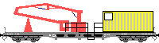
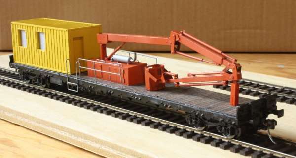
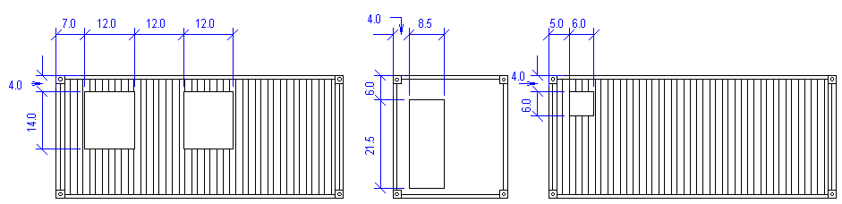
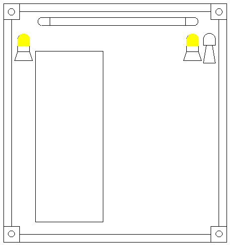

Krümelbahn
Krümelbahn
Brückenprüfwagen724

Allgemeine Informationen
Der Brückenprüfwagen besitzt einen Hubsteiger von Palfinger, der es ermöglicht, Brücken, auf denen das Fahrzeug steht, von unten zu untersuchen.Der Hubsteiger ist ausgelegt für eine Last von 850kg und kann sowohl neben dem Brückenbauwerk und als auch unter dem Brückenbogen eingesetzt werden.

Technische Daten
| Maße in H0 | ||
|---|---|---|
| Fahrzeugnummer | 80 80 978 0 041-7, Bauart 724 | |
| Dienstmasse | 58t | |
| Spurweite | 1435mm | 16,5mm |
| Achsanordnung | 2'2' | |
| Länge über Puffer | 19900mm | 228,7mm |
| Drehgestellabstand | 14860mm | 170,8mm |
| Basiswagen | Res687 | |
| Baujahr | 1983 von Graaff in Elze, Fabriknummer 40 396 | |
| gebaute Stückzahl | 1 | |
| Besonderheiten | Palfinger-Hubsteiger ausgelegt für 850kg Last, die erforderlichen Hilfseinrichtungen sind im Robelcontainer untergebracht. |
|
Literaturhinweise
Der bisher mir einzig bekannte Literaturhinweis:- Eisenbahn-Journal 1/97 (Seite 16f.) Seltene Bahndienstfahrzeuge: Brückenprüfwagen
- Bahndienst- und Dienstgüterwagen, Band 1: Spezialwagen für jeden Zweck S.244ff: Brücken- und Tunnelprüfwagen
| Links |
|---|
Industriemodelle/Bausätze
| Hersteller | Epoche | H0 | TT | N | Bemerkungen |
|---|---|---|---|---|---|
| Fleischmann | II | 855307 (F) | 858307 (F) | Karlsruhe 700 500 |
Ein Baubericht ist hier erschienen:
- Modellbahn-Kurier 42(3.Q 2013) (Seite 26f.) Brückenprüfungswagen der DB
Bauteilliste
in Betrieb seit: 10.2014Als Basiswagen habe ich einen Res687 (Fleischmann 5287) verwendet.
Weiterhin wird benötigt:
| Stückzahl | Benennung | Best.Nr. | Techn.Daten | Hinweis |
|---|---|---|---|---|
| 1 | 20ft. Container | Conrad 213767 | ||
| Kunststoff | Streifen: 2mm breit, 0,5mm dick Platte: 0,5mm dick, 1mm dick |
|||
| 1 | Feuerwehrset Aufbau LF 10/6 | Herpa 081535 | die Rollos werden benötigt | |
| 1 | Güterwagenzurüstsatz | Weinert 9254 | Pufferbohle 2 Puffersockelplatten |
|
| 4 | Puffer | Weinert 8614 | (4er Pack) | (eigentlich sollen Rechteckpuffer wendet werden) |
| 2 | Hakenkupplung | Weinert 8648 | (2er Pack) | nicht bei Anbau einer Fahrzeugkupplung |
| 2 | Bremsschläuche, glatt | Weinert 8290 | (4er Pack) | nicht bei Anbau einer Fahrzeugkupplung |
| Messingprofil | 4kant, hohl: 2*2mm, 3*3mm, 4*4mm | |||
| Messingprofil | Rundstab, hohl: 1,5mm | |||
| Messingprofil | Rundstab: 0,3mm, 0,5mm und 1mm | |||
| Beschriftung | 80 80 DB 978 0 041-7 Brückenprüfwagen724 |
Eigenentwurf, Bezug durch Andreas Nothaft |
Baubeschreibung

Brückenprüfwagen
in Betrieb seit: 12.2014
Container
Am Container sind folgende Öffnungen anzubringen
 (Containerskizze)
(Containerskizze);){kind=link}

:
- an einer Stirnseite ist die Zugangstüre anzubringen
- an der Wand links von der Türe sind zwei Fenster anzubringen
- an der Wand rechts von der Türe ist ein Lüftungsfenster anzubringen
Nach dem Ausschneiden der Fenster werden aus dem 2mm breiten, 0,5mm dicken Kunststoffstreifen kurze Streifen geschnitten und innen in die Fenster- und Türenausschnitte geklebt, um einen Fensterrahmen zu erstellen. Hinter die Türöffnung wird dann eine kleine Kunststoffplatte geklebt, um die Türe zu verschließen.
Der Container wird gelb (RAL 1018) lackiert.
Nach dem Lackieren werden die beiden Fenster auf der linken Containerseite mit Rollos aus dem Feuerwehrset verschlossen, in das Lüftungsfenster auf der anderen Seite wird Klarsichtfolie eingeklebt.
Weiterhin sind an der Türseite des Containers anzubringen (
Skizze)::;){kind=link}

- über der Türe mittig auf der Stirnseite eine Neonleuchte(Röhre)
- links und rechts an der Stirnseite nahe der Aussenkante eine gelbe Rundumleuchte
- rechts neben der rechten Rundumleuchte ein Signalhorn
Basiswagen
Der Wagen wird vollständig zerlegt, nicht mehr benötigt werden die beiden langen, silbernen Seitenwände. Auf beiden Seiten werden die Beschriftungen entfernt.
Sollen die vorhandenen Puffer gegen Federpuffer getauscht werden, geschieht dies jetzt: die alten Puffer entfernen und an den Befestigungstellen 2,2mm-Löcher für die neuen Puffer bohren.
Geländer
Das Geländer und die Aufstiegsstufen wurden aus Messingdraht (Ø 0,5mm) gebogen und gelötet. Damit diese Geländer abnehmbar bleiben (sonst kommt der Kranausleger an der Wagenseite nicht tief genug herab), werden in den Wagenboden 1,5mm-Löcher gebohrt, in die die passenden Hülsen eingesetzt werden.
Antriebsschrank
Der Antriebsschrank wird aus einer 1mm dicken Kunststoffplatte gefertigt. Die Türen werden aus der 0,5mm dicken Platte gefertigt und aufgeklebt, die Türscharniere aus 0,5mm-Draht gefertigt.
Teleskoparm
Der Teleskoparm wird aus Vierkant-Profilen gefertigt, siehe hierzu Teileskizze, die auch das Prinzip für den Zusammenbau enthält.
Lackierung
| Farbe | Best.Nr. | Techn.Daten |
|---|---|---|
| Grundierung | Weinert 2698 | |
| Fahrgestell | Weinert 2646 | RAL 9005, schwarz |
| Container | Weinert 2603 | RAL 1004, goldgelb |
| Teleskoparm, Abstützung, Antriebsschrank | Weinert 2459 | RAL 2002, blutorange |
| Auspuff, Geländer | Weinert 2647 | RAL 9006, weißaluminium |